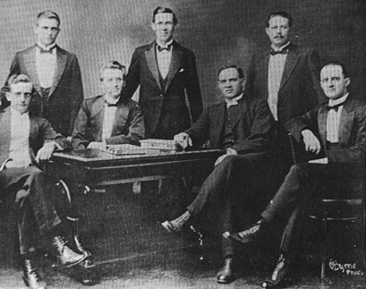

1. INTRODUCTION

Figure 2: The First Executive Council of the Afrikaner Broederbond, 1918.
Standing (l to r): D. H. C. du Plessis (secretary), J. Combrink, H. le R. Jooste.
Sitting: L. J. Erasmus, H. J. Klopper (chairman), Rev. W. Nicol, J. E. Reeler (treasurer).